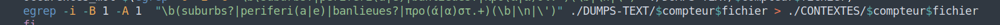
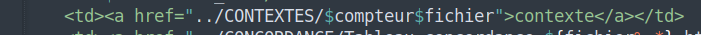

Neuvième étape : Ajout des contextes aux tableux HTML
Une des donnéés les plus importantes à analyser dans le cadre de notre projet est le contexte d’apparition des nos mots-clés “banlieue”, “periferia”, “suburb” et “προάστιο” dans chacun des articles de presse qui composent notre corpus. Au niveau informatique nous étions aménés à extraire la ligne où nos mots-clés apparaissent dans chaque articles et à en extraire aussi la ligne précédente et la ligne suivante. Pour cela faire, les DUMPS-TEXT extraits précédemment avec “lynx” se sont révélés très utiles et nous ont permis d'accomplir cette tache. Plus précisement, voici les lignes du script qui nous ont permis de créer un fichier texte contenant la ligne où le mot-clés apparait avec une ligne avant et une après et de l’ajouter aux tableaux HTML :

Cette simple recherche “egrep” sur chaque dumps-text du dossier DUMPS-TEXT contient les optons -B 1 et -A 1 (Before – After) qui ont tout simplement la fonction de retourner une ligne avant et une ligne après par rapport à la ligne où le pattern a été matché. L’option -i sert à ignorer la casse car dans le texte on compte autant les occurrences qui débutent par majuscule que celle qui sont complétement en minuscule. Une fois obtenus les 200 resultats de cette commande “egrep”, nous les avons sauvés sous un nouveau dossier CONTEXTES. Le fichiers texte contenus dans CONTEXTES sont ensuite intégrés aux tableaux HTML et différenciés grace à la variable “compteur” (pour la numérotation) et la variable “fichier” (pour différencier les langues/tableaux). Là où dans le script on peut lire < a href=”../CONTEXTES/$compteur$fichier”>, il est important de savoir qu’il s’agit du moyen avec lequel en HTML on peut créer des hyper liens qui, dans notre cas, renvoient aux fichiers texte contenus dans le dossier CONTEXTES.
